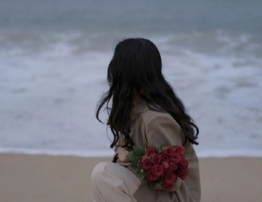
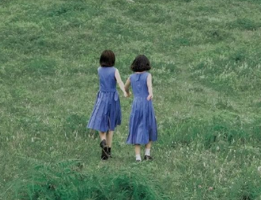

夏天晚上的唯美心情说说 2021关于夏季夜晚的心情句子
作者:网友整理 人气:0导读： 夏天的夜晚给人一种很舒服的感觉，白天的高温被这夜晚的微风冲淡了，感受到了一丝丝的凉气，希望这个夏季我们都能过的舒心。
1.要说最最喜欢的，就是夏天的夜晚
2.雨后清凉的夏日夜晚，淡淡的烛光中，空气里弥漫着点点香气……晚安…愿好梦！
3.觉得跟喜欢的人一起吃火锅和路边摊 ，开车兜风 风吹的很舒服 你们在聊天，夏日的夜晚一起伴着晚风散步，是世界上最幸福的事了吧
4.乡村的安静，远离了城市的喧嚣，这种感觉很美好。希望所有的情感都不被金钱所左右，还是那么的真切。
5.夏天的夜晚，星星闪烁着亮晶晶的光芒，一点，两点，三点。
6.黑色笼罩了一切房屋，月色朦胧，树影婆娑，风儿轻轻，吹拂着群星那晶亮的脸庞。
7.大地已经沉睡了，除了微风轻轻地吹着，除了偶然一两声狗的吠叫，冷落的街道是寂静无声的。
8.当太阳失去了中午的威严，慢慢下山后。夜幕降临了，路灯接二连三地亮起来啦。晴朗的夜空，像一条蓝色的地毯铺在上面。
9.夏日的夜晚褪去了白天的燥热，白昼很长，还有时间做想做的事，也就多了些活力，这也是夏天的美妙之处
10.夏日的夜晚，那些忽闪忽闪飞舞着的小精灵，如同夜空中闪亮的星星更似每个怀揣梦想的孩子，一路飞舞，散发着属于自己的光芒

11.进入雨季的夏日盆地，每个夜晚都有暴雨闯入还未开始的梦境。我就这样醒着看窗外，雨水还是冲不掉，燥热里充满着寂寞拥挤的味道。
12.闷热且忙碌的夏日夜晚，趁着工作的间隙溜出去喘息片刻。骑着单车在暮色中悠悠穿过高楼，人群，河流，一路且行且看。
13.随意地拐进一条熟悉的小街，一如既往的繁华喧闹，居然就这样猝不及防地遇见了一家清幽的小花店。淡蓝色的一小片隐逸在这座南方小城里一条烟火气十足的街市中。
14.夏日夜晚还在进行室外跑的人，要么有很多的爱，要么想得到爱。
15.夏天的夜晚/空气中弥漫着花露水的味道
16.今天的夜/不仅有花露水/还有桃的泪水
17.我喜欢春天，喜欢夏天，喜欢秋天，喜欢冬天
18.夏日的夜晚还是凉爽的，乡村夜晚一片漆黑，但正好看到满天的星星特别闪耀。
19.夏日夜晚，天上繁星点点。我坐在院子里荡秋千，最爱的人就在身边
20.喜欢夏季的晚上 和你手牵手散步

21.我爱夏季晚上骑单车或者散步走在路上，美滋滋~我舍友好温柔啊默默剥第一个小龙虾给我
22.夏季晚上吃了饭和朋友一起散步到操场，坐着听小哥哥们唱歌，看别人跑步，听旁边的人摆八卦，这种感觉滴很美好
23.对的，我每天晚上几乎都会戴上喜欢的耳机去散步，我想漫步在太湖边，亦或是在大海边，想念夏季的夕阳和夏季的云朵，夏天的傍晚是最漂亮的。
24.前天晚上做梦梦到大学时候夏季的晚上去操场跑步散步
25.夏季结束的时候等秋天凉爽的风晚上9点去散散步吧
26.喜欢清晨，喜欢午后，喜欢傍晚
27.天黑了才敢出门才想出门溜达真的很喜欢夏季晚上出门散步哇
28.田野，在月光的衬托下，像被铺上了一件银色的轻纱，那种感觉又加重了几分。
29.夏日夜晚走在湖边林荫道上行人比肩接踵，有散步的有跑步的，有独行的有三五成群的，男女老少齐上阵，不时感受到擦肩而过的人散发出的阵阵热浪。
加载全部内容
 公开恋情的超甜语录 2021最新版的公布恋情文案
公开恋情的超甜语录 2021最新版的公布恋情文案 能感动男朋友很撩人的一句话 适合跟男生的表白句子
能感动男朋友很撩人的一句话 适合跟男生的表白句子 很皮很有趣可以做快乐源泉的句子 让人心情变好的欢乐文案
很皮很有趣可以做快乐源泉的句子 让人心情变好的欢乐文案 电影你的婚礼催泪台词 2021最扎心的电影台词
电影你的婚礼催泪台词 2021最扎心的电影台词 夏天晚上的唯美心情说说 2021关于夏季夜晚的心情句子
夏天晚上的唯美心情说说 2021关于夏季夜晚的心情句子 可爱又特别撩的朋友圈小句子 朋友圈含蓄撩人的话
可爱又特别撩的朋友圈小句子 朋友圈含蓄撩人的话